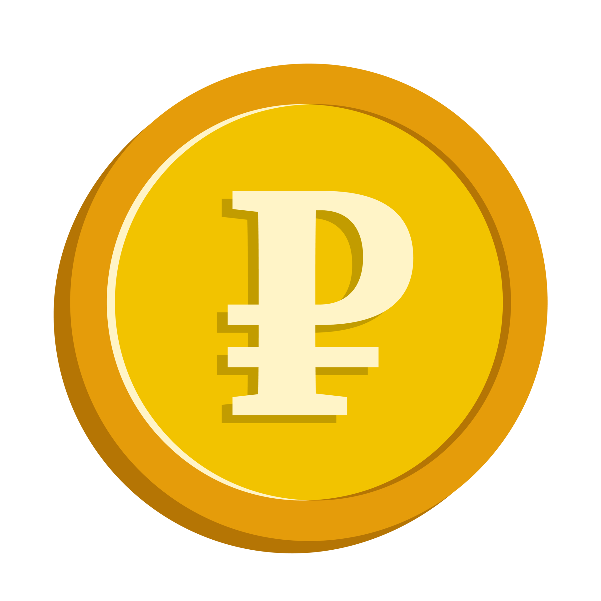
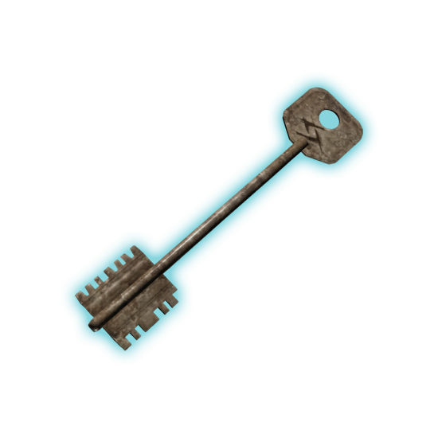

In Escape From Tarkov, loot refers to the various items and resources that players can find and collect during their raids. Loot can include weapons, ammunition, medical supplies, food, and other valuable items. The loot system is designed to be realistic and immersive, with different maps offering different types of loot and varying levels of rarity. Players must explore the environment, search buildings, and defeat enemies to acquire loot. The quality and quantity of loot can greatly impact a player's success in the game, as it allows them to gear up for future raids or sell items for profit.

The Flea Market is a central hub in Escape From Tarkov where players can buy and sell loot with other players. It serves as a marketplace for trading items and is an essential part of the game's economy.
Effective inventory management is crucial in Escape From Tarkov. Players must carefully balance the weight and volume of their loot to maximize their carrying capacity. This involves making decisions about which items to keep, sell, or discard based on their value and utility in future raids. In the main menu, players can organize their inventory, equip gear, and prepare for upcoming raids. There is a set amount of space in your inventory making storage a challenge as you progress. Bigger inventories can be either purchased or earned through quests.

Keys are essential items in Escape From Tarkov that allow players to access locked areas and containers throughout the game. Different keys are required to open various doors, safes, and storage units, adding an extra layer of strategy and planning to the gameplay. Players must find and collect keys during their raids to progress further and access better loot.
Valuables are high-value items in Escape From Tarkov that can be sold for significant profits. These items include rare weapons, unique attachments, and other exclusive gear. Players must carefully manage their inventory and prioritize collecting valuables to maximize their earnings.